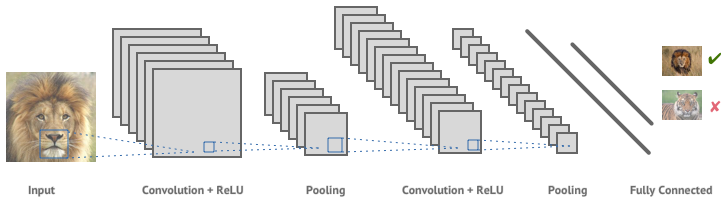

The tool running on the main page uses a Machine Learning Model using the architecture of a Convolutional Neural Network.
A Neural Network is a series of interconnected layers of nodes that perform a certain set of mathematical operations based on a few parameters.
Each node is a function that takes for input the set of nodes from the previous layer (either all or some) and performs a non-linear transformation to them based on the few parameters.
By fine-tuning these parameters we are able to tweak how to model in aggregate functions, and therefore it's output. This is how a machine learns.

This model is not a simple Fully Connected Neural Network as you see above. The model used here is convolutional. This means that instead of a 1xn dimensional array being the input,
we instead have a 2 or 3 dimension array. To preserve computational power, the model is not fully connected. The first few layers that are still multidimensional use something called a kernel.
Instead of each node in the nth layer being a weighted sum of each node in the previous layer, each is the weighted sum of an nxn (often 3x3) grid surrounding its position in the previous layer.
The kernel is the name given to the matrix of nxn multipliers that is used when parsing over the previous layer. Because of this, each subsequent convolutional layer must be smaller than the one before it.

While most Convolutional Networks look like the one above,
this model uses a very different architecture that includes the Convolutional layer relationship as central theme.
This model is an adabtation of the Inception-v3 model pretrained on Imagenet, the olympics of image classification, and released by Google. To customize the model for moles, I retrained the last few layers.
This works becasue the low level feature detection used learned in earlier layers remains, whereas we can train later layers to recognise combinations of those features.